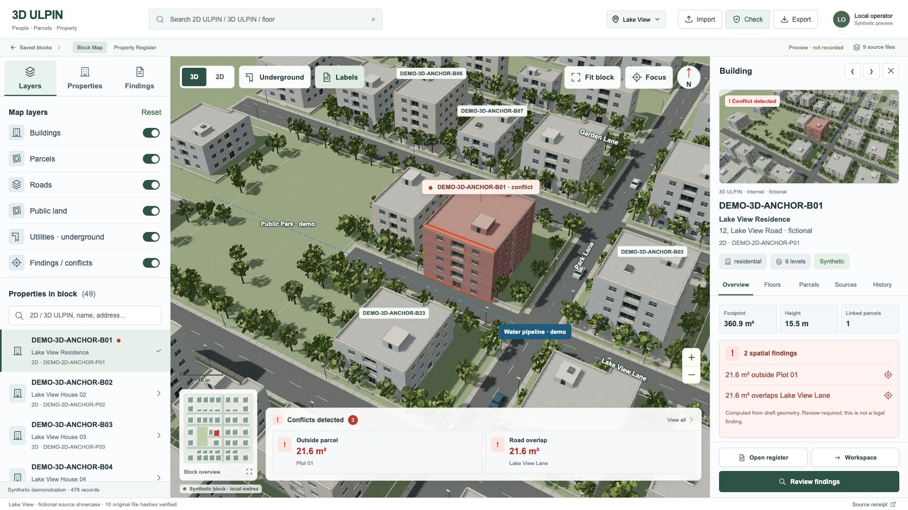

Actual browser captures before and after this change. The same source building geometry and shared viewport are retained. Tools open on demand; selected property data stays beside the map.
Before · persistent layers, list and findings tray

Now · on-demand map tools and one selected-property panel